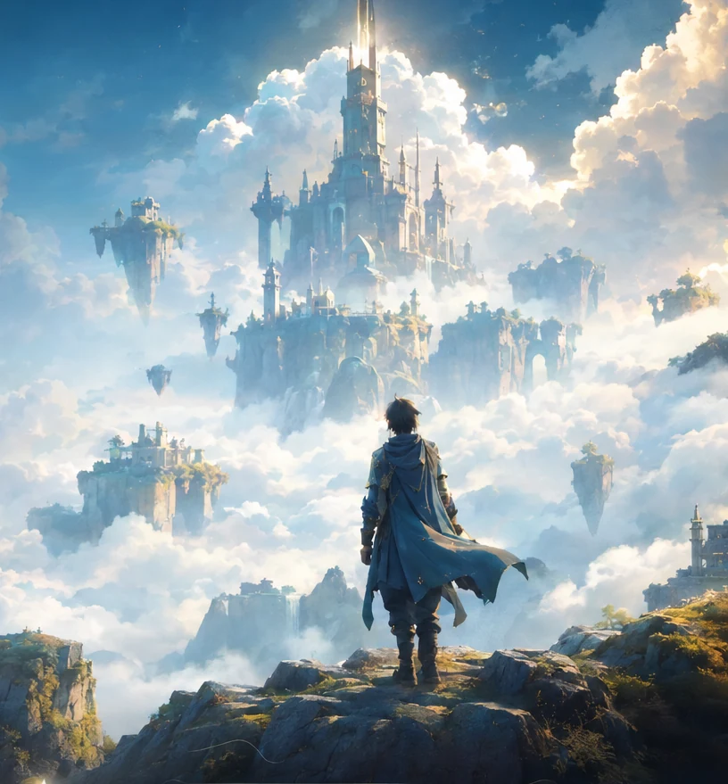
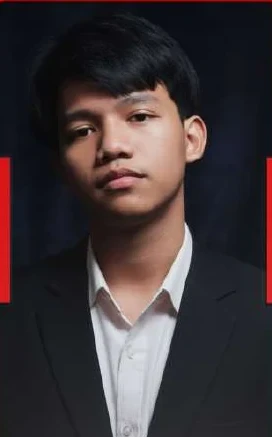
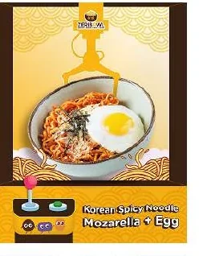
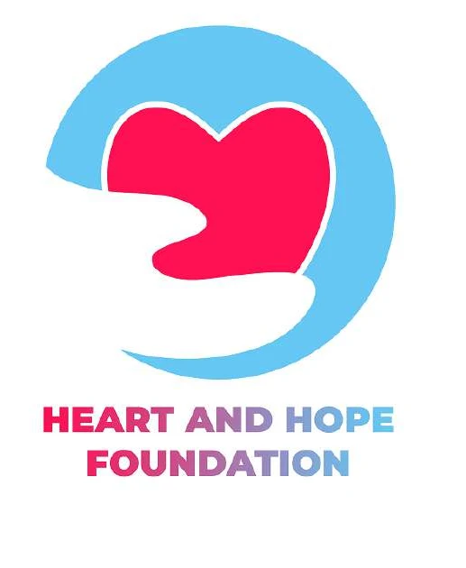
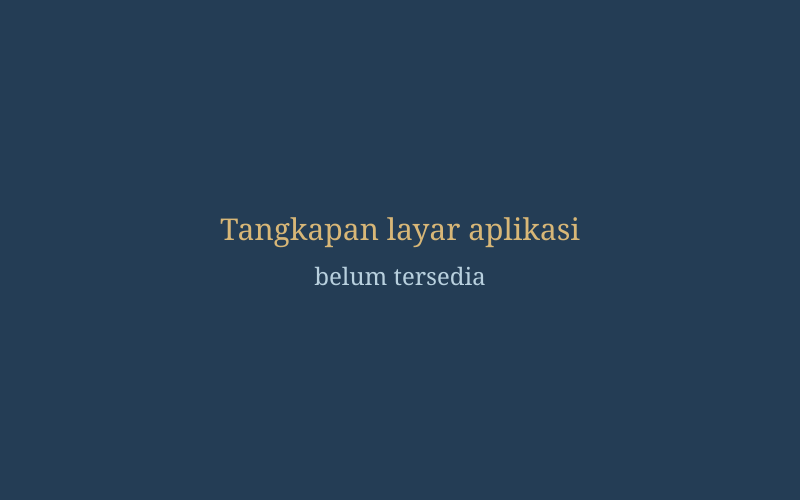
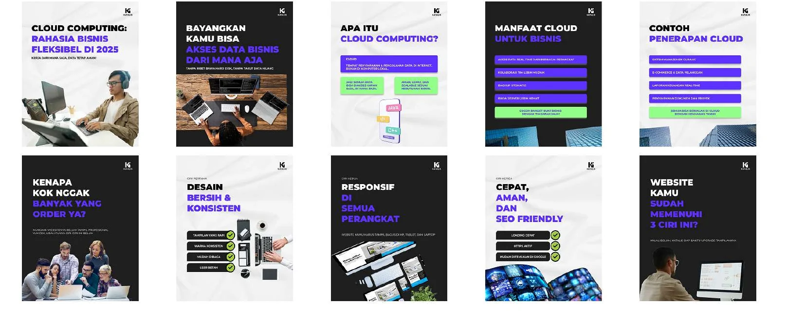
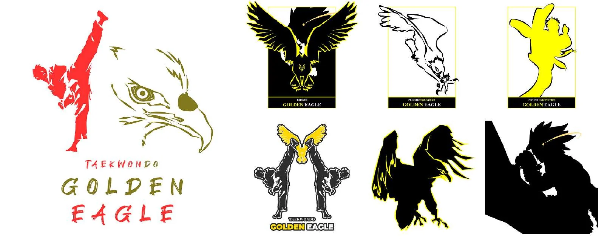
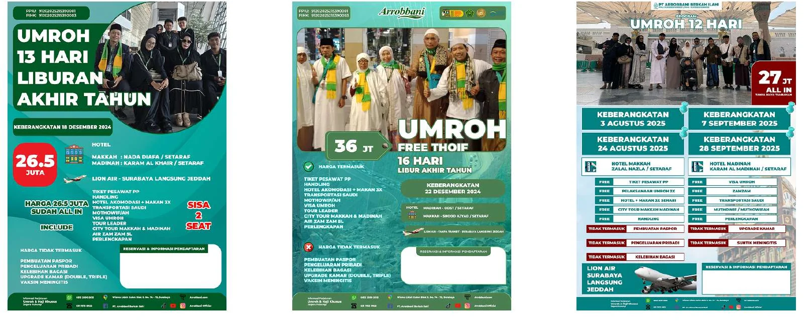

Tegar Widi Saputro
Creative Technologist · Digital Experiences · Visual Storytelling
I combine design, technology, and strategy to build meaningful digital experiences.
Scroll to explore
About Me
The Person Behind the Work
I’m a multidisciplinary creative with a background in Informatics. I work across digital marketing, content, graphic design, video, UI/UX, and programming, from managing brand content and KOL collaborations to building web applications.
I have also taught networking, web programming, and multimedia to vocational students.
- 3.74 / 4.00GPA, S1 Informatika
- BNSPJunior Web Programmer, 2024 – 2027
- Best Video Winner · DECIMAL Universitas Muhammadiyah Surabaya · 2019
- 2nd Place Poster Design · DKV UPN Veteran Jawa Timur · 2019
- 2nd Place Poster Design · HI FEST Al Hikmah Surabaya · 2018
Selected Work
Explore My Creations

Zeribowl
Marketing · Content
Heart and Hope Foundation
Branding · Logo
Absensi Online
Web Development · UI/UXMore brand work



Skill Constellation
What I Bring
Visual Design & Branding
Logo · Illustration · Brand identity
Digital Marketing & Content
Campaign · Social media · Video · KOL
UI/UX & Digital Product
Interface design · Figma
Programming & IT
HTML · CSS · JavaScript · PHP · Python
Tools I Use
FgFigma
PsPhotoshop
AiIllustrator
CvCanva
CcCapCut
The Path So Far
Experience, education, and certification
Experience
- Digital MarketingZeribowl Surabaya
- Digital MarketingPT Arrobbani Berkah Ilahi
- Teacher, TKJ & MultimediaSMK Muhammadiyah 2 Surabaya
- IT Programmer (Intern)Dinas Pendidikan Kota Surabaya
- UI/UX Designer (Intern)Yayasan Bakti Achmad Zaky (Bukalapak)
Education & Certification
- S1 InformatikaUPN “Veteran” Jawa Timur · GPA 3.74 / 4.00
- Junior Web ProgrammerBNSP certification